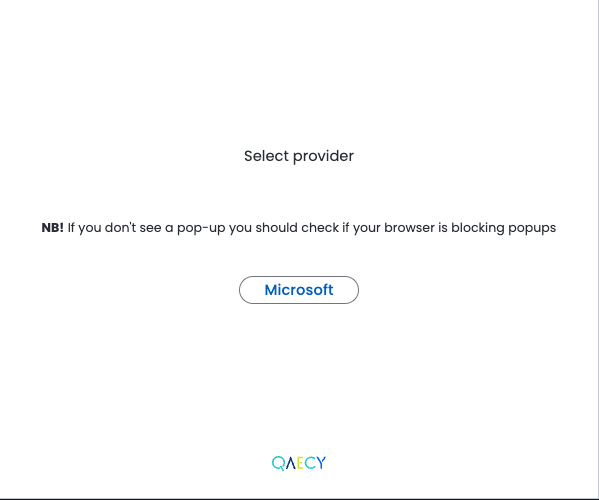

by 
An “Agent as a Service” that accelerates
domain practitioners' search for information.
You're in charge of a massive built asset. The decision landscape involves endless moving parts - design changes, budgets, norms, regulations - and it's impossible to navigate, even for a trained professional. The side effects are costly mistakes, lost time and major headaches.
Traditional tools just can't handle the complexity. You're buried in spreadsheets, emails and technical drawings, searching for answers that should be right at your fingertips.
is an AEC-specific agent that accelerates your search for information—effortlessly and without the need for specialized data preparation or rigid file structure conventions. More than just a tool, invites you on a quest to interactively carve out meaningful insights.
With , you'll spend less time searching for information
and more time doing what you excel at.
agent app
The agent can be implemented in any host application as a web component.
The web component can be customized to the host environment.
When using the widget through a typical cloud file storage environment like SharePoint or Dropbox the typical flow is as follows:
1) The user authenticates with Single Sign-on
2) The user creates an organization unless the user id is already assosiated with one
3) The user creates a project unless the user id is already assosiated with one
4) If the user has sync rights and there are files on the host app to sync the host application will be called for files to sync
Files are then processed by our pipelines and after a short while they will be part of the knowledge repository